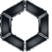
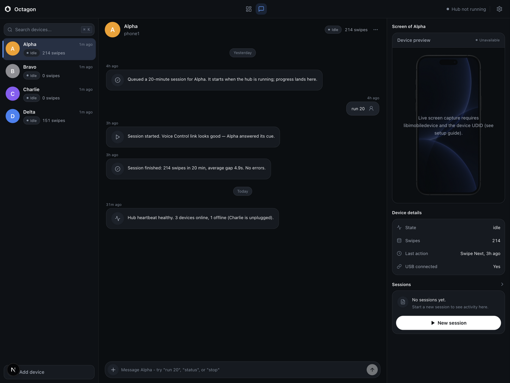
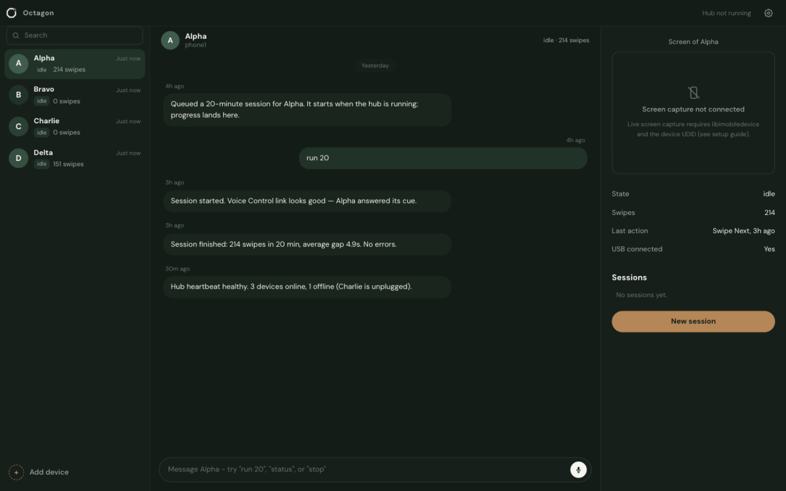

MCP Tools
Claude Desktop + Code
tools
stdio server
fully local

Octagon GitHubYour iPhone farm, on autopilot. One Mac drives every phone over iOS Voice Control -
no cloud, no unofficial APIs - with a nine-tool MCP server
so Claude can queue sessions and read events.
stdio server
fully local
SQLite database
on your Mac
No unofficial APIs
no jailbreak
How it works
A hub on your Mac keeps one brain per phone. The Mac speaks a cue out loud - "Alpha Swipe Next" - and the phone's Voice Control custom command hears it and taps. Pacing is variable, not metronomic. One cue at a time, serialized by a global audio lock. The dashboard, the hub, the database: all local.
MCP tools over stdio
SQLite file holds it all
unofficial APIs, ever
cloud. Your Mac, your data
Agents
Your farm is staffed. One conversation coordinates the whole layer: a supervisor, a monitor, and one agent per phone. Type "run 20" and a 20-minute session queues, executes, and reports back in the same thread.
Supervisor
Dispatches work and answers for the fleet. Ask @Nova status and get the queue, the health, the last word from every phone.
Monitor
Watches health and counts the queue. When a phone goes quiet, Sentry says so in the chat.
One per phone
Queue pacing sessions, run them over Voice Control, take handoffs from other agents, and report every step back in the conversation.

Demo
The screenshot below was taken with synthetic demo data seeded by the repository. No real devices, accounts or activity are shown.

Quick start
You need a Mac and Node 20 or newer. Clone, configure, install the two workspaces:
git clone https://github.com/YannisKiefer/octagon.git
cd octagon
cp .env.example .env
npm install --prefix infra/farm
npm install --prefix apps/dashboardOptional: seed synthetic demo data, then start the dashboard:
node scripts/seed-demo.js
npm run dev --prefix apps/dashboardOpen http://localhost:3010. In development the dashboard opens without a login. A production build (npm run build && npm start) enforces authentication from .env: set DASHBOARD_ADMIN_USER and DASHBOARD_ADMIN_PASSWORD, and give NEXTAUTH_SECRET a real value:
node -e "console.log(require('crypto').randomBytes(32).toString('hex'))"Your data lives in one file, infra/db/farm.db, next to the checkout. Delete it and everything is gone. To connect real iPhones, follow the setup guide: enable Voice Control on each phone, create its custom command, plug in over USB.
Download
Native app for Apple Silicon. Download the DMG, drag Octagon to Applications, and go. The dashboard, the hub, and the MCP server are all inside - no terminal required.
Download Octagon-1.1.0-arm64.dmg All releases
Unsigned build (no paid Apple certificate): the first launch needs one extra step. Open the DMG, drag Octagon to Applications, double-click it once, then allow it under System Settings - Privacy and Security - Open Anyway. After that it opens normally. Requires macOS on Apple Silicon. Prefer building it yourself? The source is the release archive.
MCP
tools over stdio
Octagon ships a local MCP server over stdio. There is no network listener and no auth by design; access is limited to the local SQLite file and the hub. Point Claude Desktop, Claude Code or any MCP client at it, and Claude can run the fleet:
list_phonesget_phonerun_sessionget_eventsget_phone_screenidevicescreenshot, or get an explicit "unavailable" answer. Never a placeholder image.list_agentscreate_agentassign_agenthandoff_task{
"mcpServers": {
"octagon": {
"command": "node",
"args": ["/absolute/path/to/octagon/mcp/server.js"]
}
}
}In Claude Desktop this goes in claude_desktop_config.json. In Claude Code you can run: claude mcp add octagon -- node /absolute/path/to/octagon/mcp/server.js
Requirements and limits
say command for cues.Privacy
SQLite file, nothing else
All state lives in a single local SQLite file: infra/db/farm.db. Devices, health, tasks, events. Nothing leaves the machine: no telemetry, no accounts, no cloud storage. The MCP server is local stdio only. Delete the file, and everything is gone.